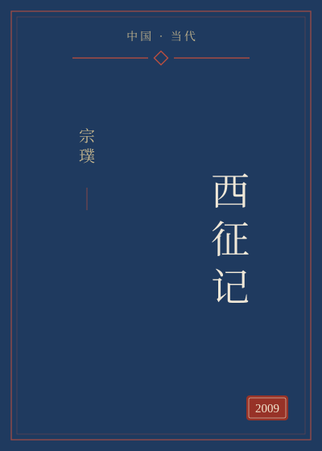
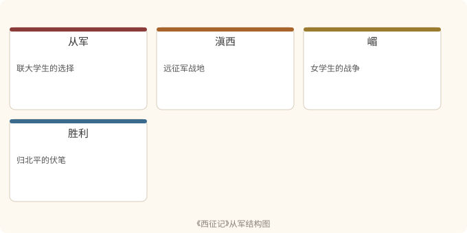

西征记
一、基本信息
| 作者 | 宗璞 |
|---|---|
| 成书/出版 | 出版年份待核（中国作家网 C025：《野葫芦引》系列四部——1985《南渡记》至2019《北归记》；2009年出版说通说待核） 《野葫芦引》：要在葫芦里装宇宙（中国作家网）（官方文学机构） |
| 国别/地区 | 中国 |
| 时代 | 现当代 · 当代 |
| 体裁 | 长篇小说 |
| 语言 | 汉语（白话） |

《西征记》从军结构图（主题·结构图）
二、创作背景
中国作家网（C025）：'西南联大学生深入前线作战，以及胜利之后返回北平的历史故事'——第三卷《西征记》写学生从军。
作者（C025）：与父亲冯友兰'同一间书房、同样的失明'的写作。
三、内容脉络
联大学生应征入伍：嵋（孟嵋）等人的从军线（通说待核）。
滇西远征军的战地（通说待核）。
四、主要人物表
| 人物 | 身份 | 说明 |
|---|---|---|
| 孟嵋 | 学生 | 从军的女学生（通说待核） |
| 澹台玮 | 学生 | （通说待核） |
五、主题与艺术特点
- 学生从军：联大叙事的战争面（C025：西南联大学生深入前线作战）。
- 青春与牺牲（通说）。
- 四记的推进（C025）。
六、影响与评论
- 中国作家网：《野葫芦引》四部历经33年（C025）。
《野葫芦引》：要在葫芦里装宇宙（中国作家网）（官方文学机构） - 中国作家网：《东藏记》获第六届茅奖（C025 作者级）。
《野葫芦引》：要在葫芦里装宇宙（中国作家网）（官方文学机构）
七、阅读建议
难点
- 滇西抗战史。
- 四记连贯阅读。
- 《西征记》（人民文学出版社，通说待核）。
三记顺读。
八、待核实
- 2009年出版核对。
- 孟嵋/澹台玮人名核对。
- 滇西远征军史实对应待核。
本页主要来源
宗璞的其他收录作品：东藏记